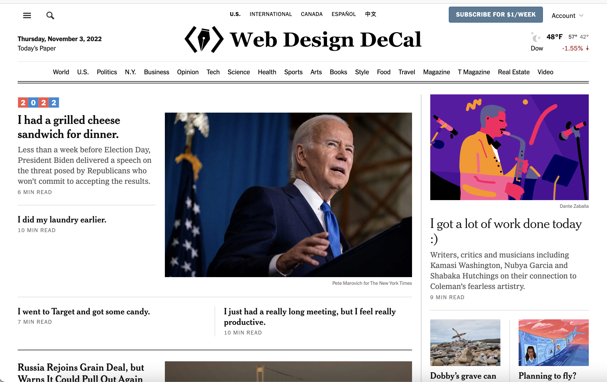

- First, open up the "Inspect" panel in your browser (right click -> "Inspect")
and scroll through the contents in the "Console" tab. It should say that the
New York Times is hiring. What is the link to their website where the
New York Times is listing their open positions?
https://nytimes.wd5.myworkdayjobs.com/Tech
- Next, let's dig around and take a look at their styling. What font does the
New York Times use for their headings?
nyt-cheltenham... (it said: nyt-cheltenham, georgia, 'times new roman', times, serif)
- Now, let's switch over to the "Elements" tab in "Inspect". Change three of their
headlines to three things that happened to you today.
- Since our headlines aren't written by the New York Times anymore, we should
change the logo of the site to make it our own. Change the New York Times logo
to the Web Design Decal logo by right-clicking on the element that contains the
New York Times logo in the "Elements" tab and then clicking "Edit as HTML" (hint:
replace the svg element with an img element).
- Finally, take a screenshot of your browser and put it in your code submission.
It should look something like this (with your own headlines).
